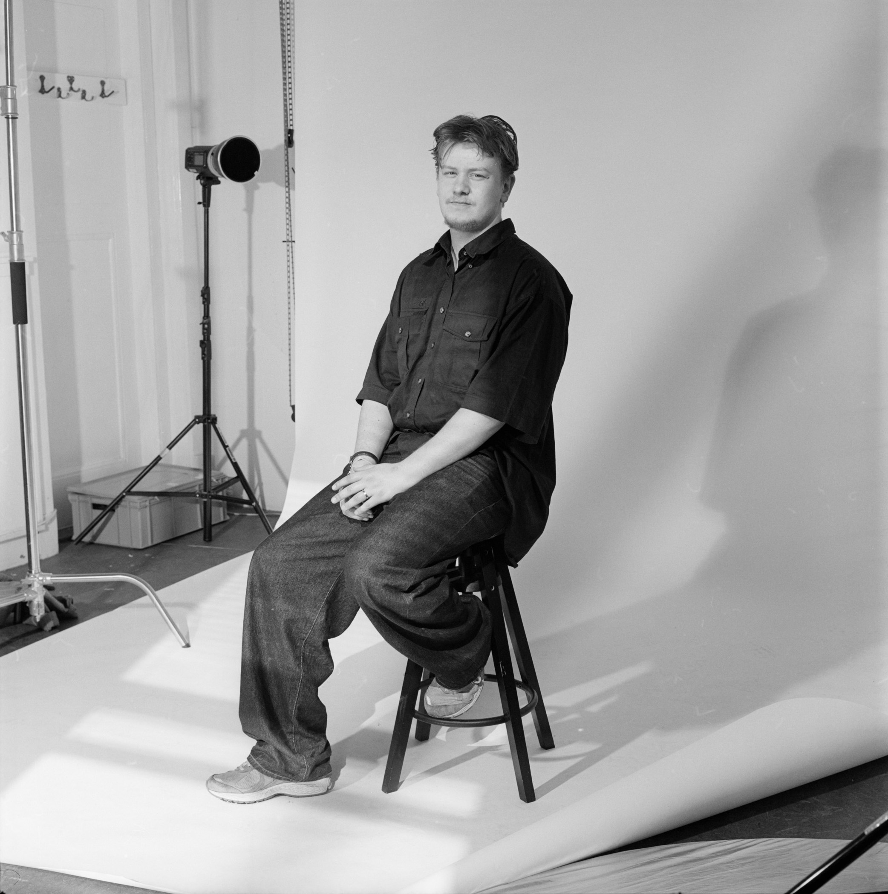

Luca van Ruiten
(b. 2004 — Based in Rotterdam, Netherlands)

Image by: Rik Versteeg
Photography has always been a part of my life. As a child, I was fascinated by cameras, video editing, and photo manipulation — anything that allowed me to capture and create. My work is broad and ever evolving, which is why I resist a single label. I enjoy capturing strong, iconic portraits that reflect the personality of my subjects, but I also work with landscape, social documentary, and commercial photography, as seen in my visual diary. Whether working digitally or embracing analog film and darkroom printing techniques, I am constantly learning, refining, and expanding my creative practice.
As a queer artist based in Rotterdam, my work is often personal. Photography has become a way to document my journey of self-acceptance and to explore themes of identity and belonging. Growing up queer in a small town shaped my perspective and fueled my interest in imagery that challenges norms. While my work leans more toward cinematic storytelling than activism, I aim to create projects that spark genuine conversation.
I bring a broad creative skillset: studio and outdoor photography, analog film development, darkroom printing, creative coding, bookbinding, and publication design. I want potential clients and collaborators to see the value in my aesthetic and way of working. While I'm adaptable to commercial briefs, I thrive when collaborating with people who appreciate artistic vision.